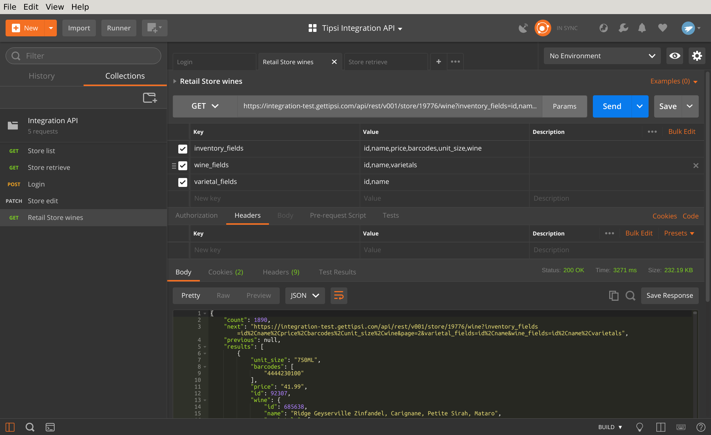
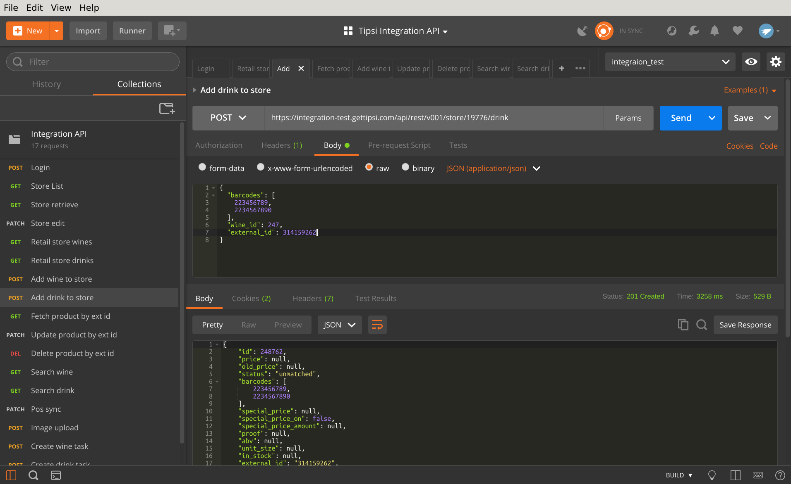

List or create operations¶
List all store products¶
GET request to /api/rest/v001/store/STORE_ID/wine or /api/rest/v001/store/STORE_ID/drink endpoint will list all the available products. The endpoints are paginated - they will return a thousand results per page. You can modify page size by passing page_size parameter, but values larger than a thousand will be ignored. By the way, all GET APIs are lazy - by default they will only return object id. Fields should be requested explicitly as GET parameter - a comma separated list of fields for each struct, see RetailWineDynSerializer and RetailDrinkDynSerializer for the full structs description.
The example below requests wine inventory and nested fields (ids, barcodes, vintage and etc):
See Store products for more details.
Add product to store¶
POST request to /api/rest/v001/store/STORE_ID/wine or /api/rest/v001/store/STORE_ID/drink endpoint will create a new inventory item, wine_id or drink_id parameter is required. Usually you get wine_id or drink_id through full text search across Tipsi database. Other required parameters - barcodes (can be an empty list, though) and external id (item ID in your database). Params should be formatted as JSON dictionary.
The sample will create a new inventory item with assigned drink id 6755 and empty barcodes list. Barcodes can be empty, but the parameter is required
See Store products for more details.